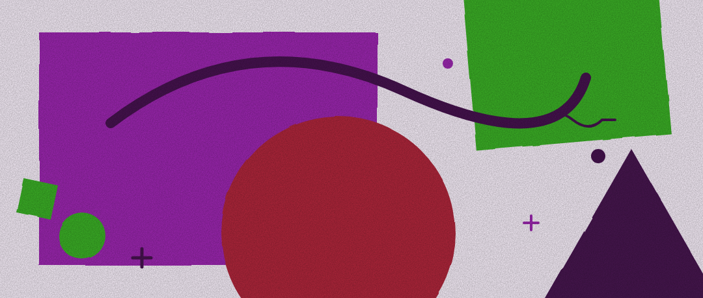
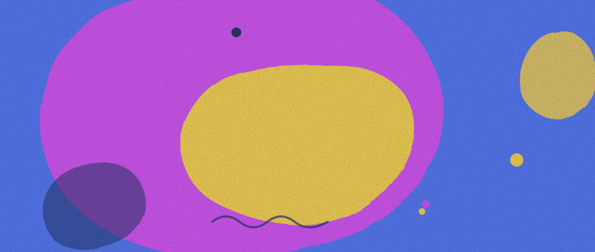

Figma 把 Agent 装进画布，让设计师同时开多个方向
Figma 把 Agent 装进了画布，让设计师可以同时跑多个方向，而不是排队等 AI 给一版。这背后是对「速度还是精准」这个假选择的回答。
2026-05-31

Genie 给 AI 装了一具身体：光、物理和触感
大多数 AI 产品还停留在「聊天框」阶段。设计师 Nelson Noa 给 Genie 造了一套界面语言「Grammar of AI」——用光、物理、触感让 AI 有存在感、有重量、能被「捏」。
2026-05-30
封面 16:9
AI 产品的首屏，正在被重新定义
过去比第一眼好不好看，现在比第一句话懂不懂你。对话式入口正在取代功能堆叠。
2026-05-24
封面 16:9
AI 图标为什么都爱上了那颗星芒
从 Gemini 到一众 AI 入口，四角星芒几乎成了「智能」的默认符号。它凭什么赢，又为什么偏偏是它？
2026-05-22
封面 16:9
那团彩色光晕，正在成为 AI 的视觉口头禅
渐变光晕几乎贴在每个 AI 功能上。它到底在传递「智能感」，还是大家互相抄出来的安全牌？
2026-05-18
封面 16:9
SearchBox 还是 ChatBox：AI 在产品里的两种露法
把 AI 塞进搜索框，和围绕对话重做一遍，是两条完全不同的路。界面怎么摆，藏着产品对 AI 的判断。
2026-05-14
封面 16:9
图标设计在 AI 时代，还值不值得手画
当模型一句话生成整套图标，设计师的价值不在画，而在定规则、保一致、把控气质。
2026-05-10
封面 16:9
对话式界面的引导，比按钮难十倍
按钮告诉你能点什么，对话框却什么都不说。怎么让用户知道能问什么，是最隐蔽的难题。
2026-04-28
封面 16:9
设计工具的下半场，拼的是「懂上下文」
从画布到对话，设计工具正从「我画给它看」转向「它懂我要什么」。上下文成了护城河。
2026-04-12
封面 16:9
当 AI 会犯错，界面怎么帮用户兜底
模型答非所问时，好的界面要能纠偏、能撤回、能让用户重新表达，而不是甩一句抱歉。
2026-03-30
封面 16:9
为什么好用的 AI 产品，都在「收敛选择」
选项越多越焦虑。顶尖 AI 产品都在替用户做减法，把无穷可能收敛成一个清晰的下一步。
2026-03-18